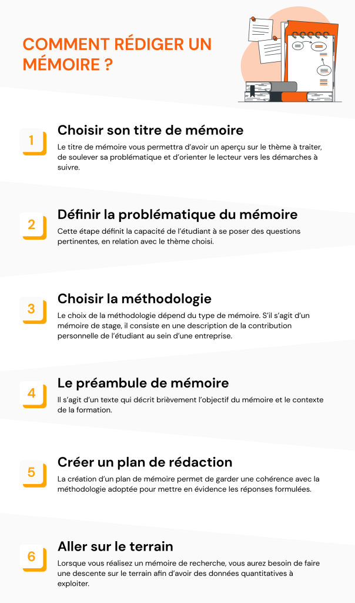
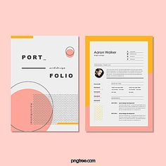
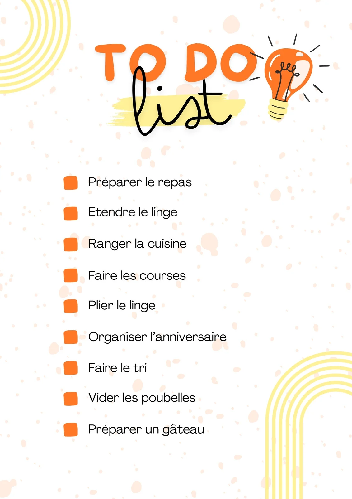

Description
Une association dédiée à transformer vos travaux en chef-d'ouvre: découvrez des outils, modèles et conseils pour des présentartions impécable, des documents professionnels et des projets clairs et organisiés. Simplifiez, structurez, impressionnez
Nos Projets
Voici une sélection des projets que nous avons réalisé.
Projet 1: Mémoire bien présenté
Un mémoire complet et correctement présenté
Projet 2 : Site Portfolio
Un site portfolio personnel pour présenter mon travail et mes compétences.
Projet 3 : Application To-Do
Une application web permettant de gérer une liste de tâches.